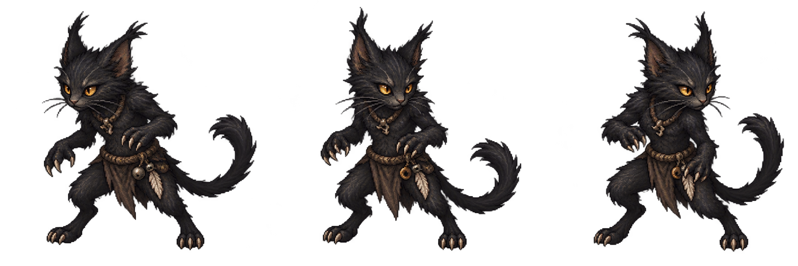
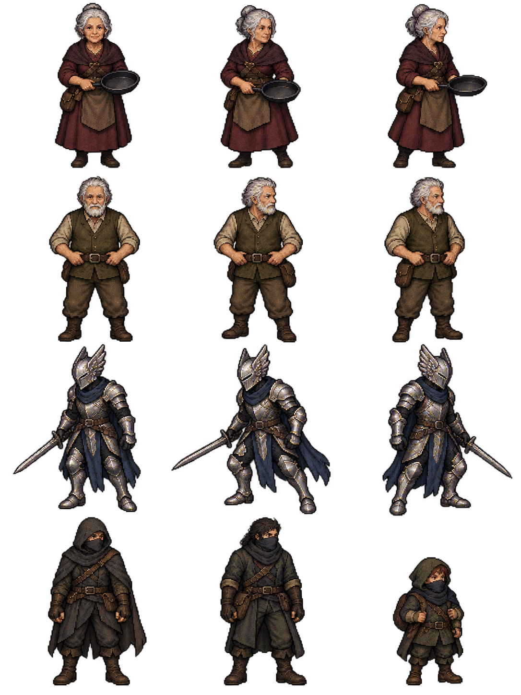
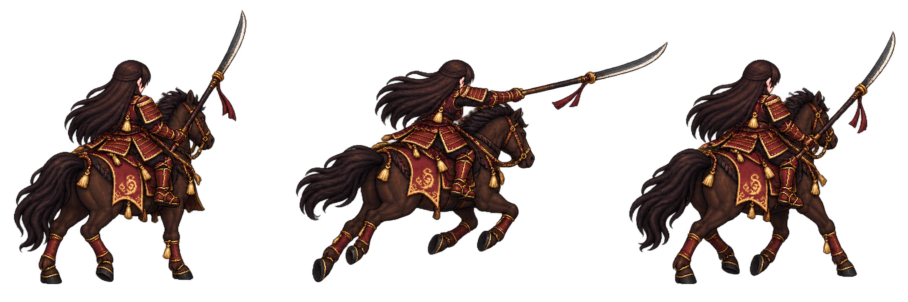
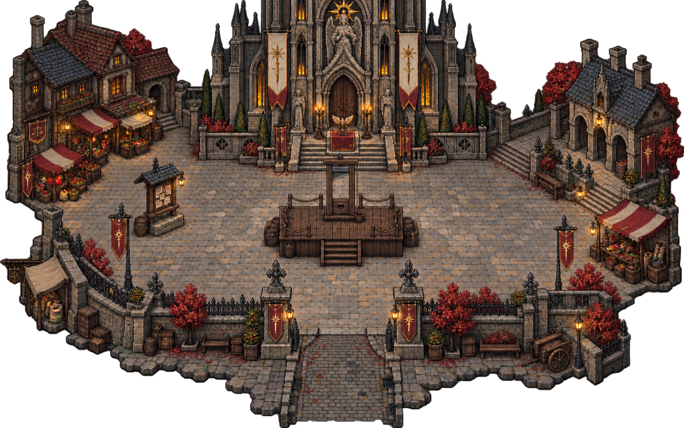

Return to the game · Original generated interpretations based on campaign descriptions. Exact appearances are provisional.

Ovinnik: three idle frames. The campaign identifies a tiny feline humanoid; palette and clothing are new interpretations.

Rows: Bo Gramel; Dent Gramel; Riley’s false Angel Knight; generic masked human and halfling silhouettes. Masked figures remain unidentified and are prepared for later reuse, not presented as known suspects.

Freya’s mounted stance, charge and recovery. The naginata appears in the recorded finishing scene; it is not added as an invented inventory reward.

The existing square gains a platform and guillotine. Transparent borders retain the separate background layer.